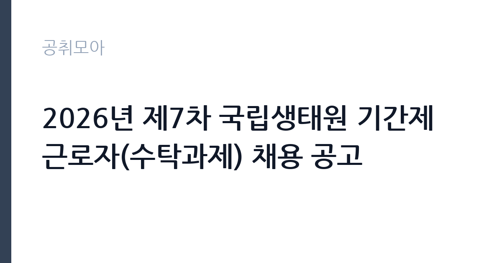

[공공기관] 2026년 제7차 국립생태원 기간제근로자(수탁과제) 채용 공고
국립생태원 · 충남 · 마감 2026-10-06 (D-15) · 출처 잡알리오

한눈에 보는 모집 조건
| 기관 | 국립생태원 |
|---|---|
| 공고명 | 2026년 제7차 국립생태원 기간제근로자(수탁과제) 채용 공고 |
| 고용형태 | 기간제 |
| 근무지 | 충남 |
| 게시일 | 2026-09-22 |
| 마감일 | 2026-10-06 (D-15) |
지원자격, 이렇게 읽으세요
- 공공기관 채용공시
- 세부 조건은 원문 공고문 확인
전문위원 마급의 자격·경력 요건이 관건이다. 비교 기준으로 제시되는 라급 요건(관련 석사+2년, 학사+5년, 기사+2년 등)을 보면, 마급은 그보다 한 단계 높은 수준의 경력과 전문성이 요구된다. 정확한 마급 기준은 원문 공고문에서 확인해야 한다. 결격사유(기간제근로자 관리세칙)와 병역(남성은 필·면제), 최종 합격 후 즉시 출근 가능 여부도 필수 조건이다. 장애인과 보훈대상자는 우대한다.
이 공고의 포인트
수탁과제 전문위원은 연구 경력을 쌓는 자리다. 국립생태원은 서천에 위치한 환경부 산하 연구기관으로, 생태계 조사와 복원, 기후변화 대응 연구를 수행한다. 수탁과제 경력은 이후 국책연구기관이나 환경 컨설팅, 박사 과정 진학의 밑거름이 된다. 제7차라는 숫자가 말해주듯 수시로 과제가 열리는 기관이라, 이번에 인연을 맺어두면 다음 과제로 이어질 가능성도 있다.
전형은 어떻게 진행되나
전형은 서류전형과 면접전형으로 진행되는 것이 일반적이다. 서류에서는 전공 적합성과 과제 수행 경력을 보고, 면접에서는 연구 역량과 과제 이해도를 평가한다. 연구직 전형이므로 발표 평가나 연구계획서 제출이 포함될 수 있다. 세부 전형과 제출 서류는 원문 공고문과 접수처(생태원 채용 홈페이지)에서 확인해야 한다.
원문에서 확인한 전형 방식
가. 국립생태원 「기간제근로자 관리세칙」 제8조의 결격사유에 해당되지 않은 자 나. 자격 및 경력 요건: 해당분야 전공자 및 경력자로서 해당 업무 수행이 가능한 자 (※전문위원 마급) 위 “가부터 라”의 자격 및 경력요건에 포함할 수 없는 자격·기능 및 경력이 있는 자 * 비교를 위함 - '전문위원 라급' 1. 채용예정 직무분야와 관련된 석사학위 취득 후 2년 이상 경력이 있는 자 2. 채용예정 직무분야와 관련된 학사학위 취득 후 5년 이상 경력이 있는 자 3. 기사 자격을 취득하고 해당 분야에 2년 이상 경력이 있는 자 4. 산업기사 자격을 취득하고 해당 분야에 6년 이상 경력이 있는 자 다. 병역을 필하였거나 면제된 자(남자만 해당) 라. 장애인 또는 보훈대상자 관계법에 따라 우대(관련 서류 제출 시) 마. 최종 합격 후 즉시 출근이 가능한 자
이런 분께 추천해요
- 생태·환경·생물 분야 석사 이상 학위와 연구 경력을 가진 사람
- 생태 조사·모니터링이나 환경 용역 수행 경험이 있는 사람
- 서천 근무가 가능하고 연구 경력을 이어가려는 사람
지원 전 체크리스트
- 전문위원 마급의 자격·경력 요건을 원문에서 확정한다
- 전공과 경력이 채용 예정 직무와 맞는지 점검한다
- 연구실적 목록과 경력증명서를 미리 정리한다
- 접수 마감일(10월 6일)과 접수처, 발표 평가 포함 여부를 원문에서 확인한다
모집 일정과 제출 타이밍
접수는 2026년 10월 6일에 마감된다. 이후 서류와 면접을 거쳐 10월 중 임용되는 흐름이 일반적이다. 수탁과제는 과제 기간과 연동되므로 계약 기간이 과제 종료 시점과 맞물린다. 정확한 계약 기간과 전형 일정은 원문 공고문에서 확인해야 한다.
직무 이해하기: 공공기관
수탁과제 전문위원은 발주처의 요구에 따라 생태 조사와 데이터 분석, 보고서 작성을 수행한다. 야외 조사가 포함된 과제는 서천과 전국 현장을 오가며 표본을 채집하고, 실내에서는 통계 분석과 원고 작성을 맡는다. 과제 회의에서 발주처와 진행 상황을 조율하는 것도 업무다. 연구윤리와 일정 준수가 생명이며, 과제 결과물은 발주처 평가로 이어진다.
자기소개서 작성 팁
연구 실적 중심의 서류가 필요하다. 참여한 과제와 본인의 역할, 사용한 조사·분석 기법을 구체적으로 써야 한다. 채용 예정 과제와 연관된 경험을 앞에 배치하고, 과제 수행 중 발생한 문제와 해결 과정을 넣으면 실무 역량이 드러난다. 학위논문 주제와 지원 과제의 연결고리를 한 문장으로 정리하는 것도 좋다.
면접 준비 포인트
면접에서는 연구 역량 검증 질문이 나온다. 사용 가능한 조사 기법과 분석 도구, 과제 수행 경험을 깊이 있게 묻는다. 수탁과제의 특성상 발주처 대응과 일정 관리 경험도 확인한다. 해당 과제의 배경 지식을 묻는 질문이 나올 수 있으므로, 생태원의 수탁과제 분야와 관련 법·정책을 파악하고 가야 한다.
급여·근무조건 읽는 법
정확한 보수액은 원문 공고문의 보수 항목에서 확인해야 한다. 과거 유사 공고(제4차)에서는 급여가 회사 내규에 따른다고 명시되어 있었다. 전문위원 등급별 보수표가 별도로 있으므로 마급 해당액을 원문에서 확인하기 바란다. 4대보험과 연구수당 적용 여부도 원문에서 확인해야 한다. 경쟁률과 합격선은 공개되지 않으므로 원문에서 확인해야 한다.
자주 묻는 질문
- 수탁과제란 무엇인가요?
외부 기관이 발주한 연구·용역을 생태원이 수탁받아 수행하는 과제다. 과제 기간과 예산에 따라 계약 기간이 정해지므로 원문에서 확인해야 한다. - 전문위원 마급의 수준은 어떻게 되나요?
생태원 기간제 직급 중 상위 등급으로, 석사 이상 학위와 수년 이상의 관련 경력이 요구되는 것이 일반적이다. 정확한 요건은 원문 공고문에서 확인해야 한다. - 근무지는 서천인가요?
국립생태원 본원은 충남 서천군에 있다. 다만 수탁과제 특성상 현장 조사지역 출장이 포함될 수 있으므로 원문에서 확인해야 한다.
함께 보면 좋은 공고
[공공기관] 한국토지주택공사 개방형 직위(감사실장, 준법감시관) 공모 — 마감 2026-10-07[공공기관] 한국도로공사 비상임이사 공모 — 마감 2026-09-29[공공기관] 2026년 하반기 2차 중소벤처기업진흥공단 체험형 청년인턴(장애인) 채용 공고 — 마감 2026-10-12출처: 잡알리오 공개정보를 바탕으로 공취모아가 정리한 안내글입니다. 모집 조건·일정은 변경될 수 있으니 지원 전 반드시 원문 공고문을 확인하세요. 본 글은 정보 제공용이며 합격을 보장하지 않습니다.